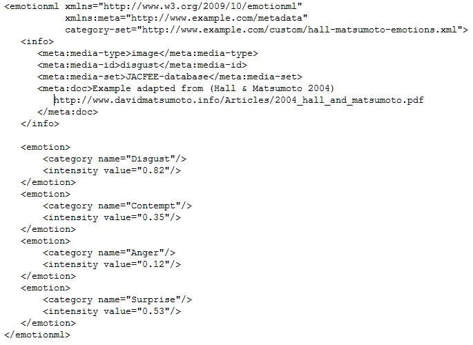

How to Use EmotionML
EmotionML uses simple tags to describe emotions so computers can understand. Some common ways to use it are:
1. Basic Emotion Tagging
<emotion>
<category name="happy"/>
"This is great!"
</emotion>
<category name="happy"/>
"This is great!"
</emotion>
2. Measuring Emotion Strength
<dimension name="intensity" value="0.8"/>
3. Everyday Uses
- Video Games: Controls how characters show emotions
- Customer Service: Helps AI chatbots recognize when customers are frustrated
- Education: Lets learning programs adapt and react to student emotions
- Healthcare: Monitors patient emotional states, collectiong data